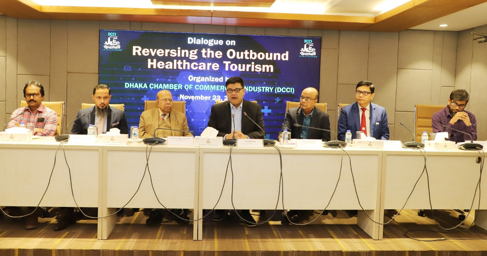

Nationwide
All mass-uprising martyrs' families will be rehabilitated: Prof Yunus

Published: November 22,2024
Chief Adviser Professor Dr Muhammad Yunus today said his interim government will rehabilitate families of all mass-uprising martyrs and bear full expanses of the treatment of all injured.
"I have said it earlier, and again I am informing that the families of all the martyrs of the mass uprising will be rehabilitated and none will be left out," he said in a televised address to the nation on the completion of 100 days of the interim government. He said each martyr's family will get Taka 30 lakh from the government while the health ministry has prepared a comprehensive list for the long-term and costly treatment of the injured and looking after the families of the martyrs. Prof Yunus said the government took steps to bring corneas from Nepal for the treatment of those who lost their eyesight suffering pellet injury in the mass uprising. The Chief Adviser said some deserving injured have also been sent abroad for better treatment under government initiatives. No martyrs and injured students and workers of the July uprising will be left out of rehabilitation plan and healthcare, he asserted. "This is the commitment of the interim government," he added. Prof Yunus said the July Shaheed Smriti Foundation, formed to preserve the memory of the martyrs of this mass uprising, has started their works in a strong manner. The government has given a grant of Taka 100 crores to this foundation, he mentioned. He said the social welfare ministry has sent a $ 5 million allocation proposal to the World Bank through the Economic Relations Division to ensure the rehabilitation of the families of the martyrs and the best treatment of the injured in the July-August revolution.Bangladeshis spend over $4b annually for healthcare abroad
Published: November 23,2024